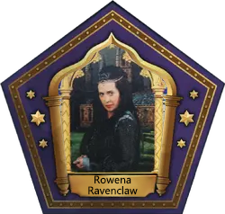
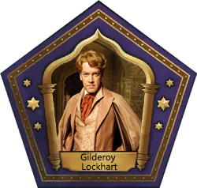

Saudações, usuário, da casa CORVINAL!
Agora você é definitivamente um aluno. Está preparado para viver a magia?
Saiba algumas curiosidades antes de começar
Saiba quais as origens dos bruxos desta escola
Quantidade de alunos em cada casa
BRUXOS QUE FIZERAM HISTÓRIA
Conheça dos bruxos que fizeram história na casa a qual você faz parte.

Rowena Ravenclaw
foi uma das fundadoras de Hogwarts e a responsável por estabelecer a casa Corvinal. Ela era conhecida por sua inteligência excepcional e busca pelo conhecimento. Ravenclaw valorizava a sabedoria e a criatividade, deixando um legado duradouro na casa Corvinal.

Luna Lovegood
membro importante da comunidade bruxa, ela é conhecida por sua natureza excêntrica e perspectiva única do mundo mágico. Luna demonstra grande coragem e lealdade, desafiando as convenções e mostrando uma mente aberta para as possibilidades. Sua presença na Corvinal contribui para a diversidade e originalidade da casa.

Gilderoy Lockhart
Embora controverso, Gilderoy Lockhart fez história na casa Corvinal como um famoso bruxo e autor de livros de aventura. Ele era conhecido por suas histórias emocionantes e pelo charme cativante. Apesar de suas falhas e fraquezas, Lockhart representava a ambição e a busca por reconhecimento na casa Corvinal.
Esses três bruxos deixaram sua marca na casa Corvinal, cada um contribuindo de maneira diferente. Eles representam traços como inteligência, originalidade, coragem e ambição, enriquecendo a diversidade e o espírito da casa.
Agora acreditamos que você já está por dentro dos detalhes de sua casa.
Acesse a aba estudos, para treinar os feitiços preparatórios antes do início das aulas.